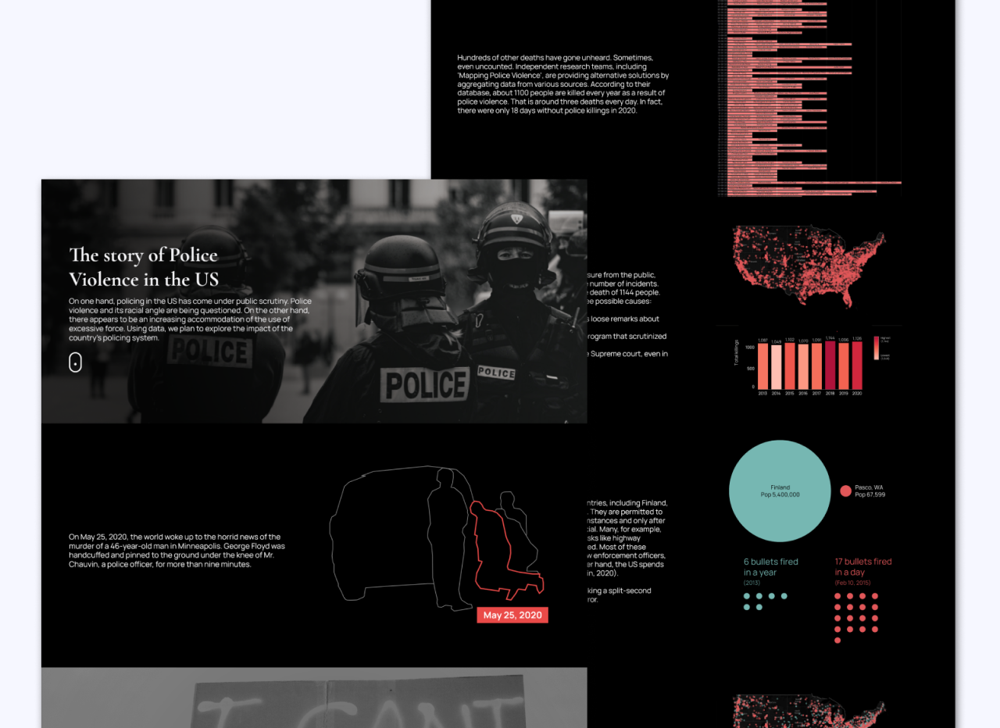
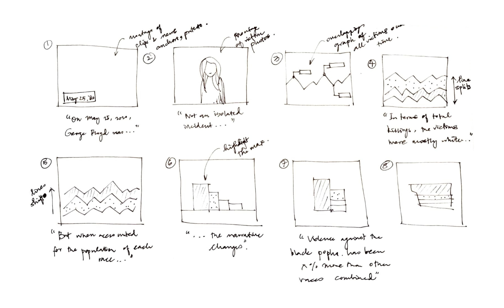
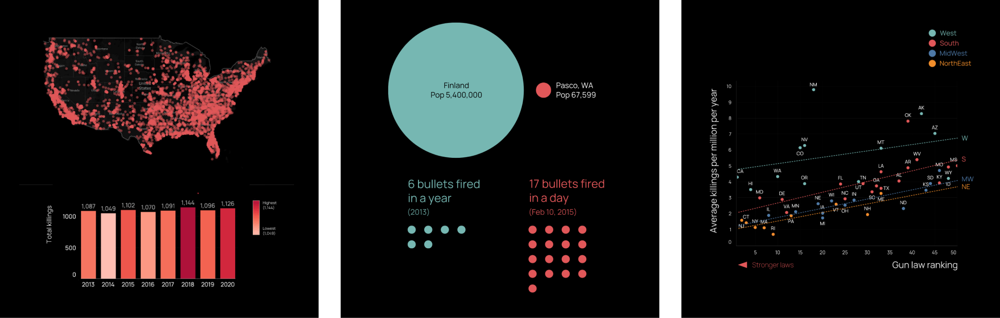

Problem
The challenge was to create a scrollytelling website that
presented data on police violence in the US for my graduate class,
'Principles of Data Visualization'.
Results
Utilizing tools like Tableau, AfterEffects, and HTML/CSS, we
developed a website that narrated a story through insights
revealed and charts animated upon scrolling. The site also
featured an interactive data exploration tool, enabling users to
delve into the data and discover their own insights.

The project was recognized as one of the top projects in the class
that year.
We explored the data using Tableau and conducted literature review
before storyboarding various narration approaches.
Problem Identification
Our initial major task was to select the most suitable
dataset—optimal in size and rich in significant, engaging stories.
After cleaning the dataset, we imported it into Tableau for
exploratory analysis to pinpoint key insights. Concurrently, a
literature review helped clarify these insights and identify
narratives that integrated with our story.

One of the storyboard options for the scrollytelling website.
An example of the evaluation of multiple iterations of a
visualization.
Story Development
Our exploration of the data and subsequent literature review yielded
three key focal points:
-
Magnitude: We compared the total number of cases in the US to
those in other countries, uncovering scholarly articles that
speculated on possible reasons for these disparities. We also
investigated correlations between the number of incidents, time,
geography, and the political climate.
-
Use of Weapon: Our analysis identified firearms as the predominant
weapon used both by police officers and alleged victims. Our
visualizations aimed to illustrate the impact of firearm
possession on police violence.
-
Racial Bias: We discovered that victims not carrying weapons were
predominantly from specific racial backgrounds. This finding was
supported by numerous research studies, and we incorporated
additional news articles about individual cases and their broader
implications.
We storyboarded various narration approaches before deciding on a
sequence that began with an individual victim's story, expanded to
include international comparisons, and concluded with a comprehensive
data visualization for user interaction.
For each visualization, we considered multiple designs, assessing
their strengths and weaknesses before finalizing our choice for
development in Tableau.

Visualizations include bubble maps, bar charts, bubble charts, dot
plots, and correlation charts.
Post-Tableau, I converted the visuals into .AI files, then animated
them in AfterEffects, and finally imported them as Lottie files that
activated on scroll. At the story's end, we integrated a Tableau
visualization for further data exploration.
Please reach out to me at
nive.mathan21@gmail.com
to discuss the case study in detail.